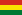

Antimony
| General properties | |||||||||||||||||||||||||||||||||||||||||||||||||||||||||||||||||||||||||||||||||||||||||||||||||||||||||||||||||||||||||||||||||||||||||||||||||||||||||||||||||||||||||||||||||||||||||||||||||||||||||||||||||||||||||||||||||||||
|---|---|---|---|---|---|---|---|---|---|---|---|---|---|---|---|---|---|---|---|---|---|---|---|---|---|---|---|---|---|---|---|---|---|---|---|---|---|---|---|---|---|---|---|---|---|---|---|---|---|---|---|---|---|---|---|---|---|---|---|---|---|---|---|---|---|---|---|---|---|---|---|---|---|---|---|---|---|---|---|---|---|---|---|---|---|---|---|---|---|---|---|---|---|---|---|---|---|---|---|---|---|---|---|---|---|---|---|---|---|---|---|---|---|---|---|---|---|---|---|---|---|---|---|---|---|---|---|---|---|---|---|---|---|---|---|---|---|---|---|---|---|---|---|---|---|---|---|---|---|---|---|---|---|---|---|---|---|---|---|---|---|---|---|---|---|---|---|---|---|---|---|---|---|---|---|---|---|---|---|---|---|---|---|---|---|---|---|---|---|---|---|---|---|---|---|---|---|---|---|---|---|---|---|---|---|---|---|---|---|---|---|---|---|---|---|---|---|---|---|---|---|---|---|---|---|---|---|---|---|
| Name, symbol | antimony, Sb | ||||||||||||||||||||||||||||||||||||||||||||||||||||||||||||||||||||||||||||||||||||||||||||||||||||||||||||||||||||||||||||||||||||||||||||||||||||||||||||||||||||||||||||||||||||||||||||||||||||||||||||||||||||||||||||||||||||
| Pronunciation | UK /ˈæntɨməni/, AN-ti-mə-nee US /ˈæntɨmoʊni/, AN-ti-moh-nee |
||||||||||||||||||||||||||||||||||||||||||||||||||||||||||||||||||||||||||||||||||||||||||||||||||||||||||||||||||||||||||||||||||||||||||||||||||||||||||||||||||||||||||||||||||||||||||||||||||||||||||||||||||||||||||||||||||||
| Appearance | silvery lustrous gray | ||||||||||||||||||||||||||||||||||||||||||||||||||||||||||||||||||||||||||||||||||||||||||||||||||||||||||||||||||||||||||||||||||||||||||||||||||||||||||||||||||||||||||||||||||||||||||||||||||||||||||||||||||||||||||||||||||||
| Antimony in the periodic table | |||||||||||||||||||||||||||||||||||||||||||||||||||||||||||||||||||||||||||||||||||||||||||||||||||||||||||||||||||||||||||||||||||||||||||||||||||||||||||||||||||||||||||||||||||||||||||||||||||||||||||||||||||||||||||||||||||||
|
|||||||||||||||||||||||||||||||||||||||||||||||||||||||||||||||||||||||||||||||||||||||||||||||||||||||||||||||||||||||||||||||||||||||||||||||||||||||||||||||||||||||||||||||||||||||||||||||||||||||||||||||||||||||||||||||||||||
| Atomic number | 51 | ||||||||||||||||||||||||||||||||||||||||||||||||||||||||||||||||||||||||||||||||||||||||||||||||||||||||||||||||||||||||||||||||||||||||||||||||||||||||||||||||||||||||||||||||||||||||||||||||||||||||||||||||||||||||||||||||||||
| Standard atomic weight (±) | 121.760(1)[1] | ||||||||||||||||||||||||||||||||||||||||||||||||||||||||||||||||||||||||||||||||||||||||||||||||||||||||||||||||||||||||||||||||||||||||||||||||||||||||||||||||||||||||||||||||||||||||||||||||||||||||||||||||||||||||||||||||||||
| Element category | metalloid | ||||||||||||||||||||||||||||||||||||||||||||||||||||||||||||||||||||||||||||||||||||||||||||||||||||||||||||||||||||||||||||||||||||||||||||||||||||||||||||||||||||||||||||||||||||||||||||||||||||||||||||||||||||||||||||||||||||
| Group, block | group 15 (pnictogens), p-block | ||||||||||||||||||||||||||||||||||||||||||||||||||||||||||||||||||||||||||||||||||||||||||||||||||||||||||||||||||||||||||||||||||||||||||||||||||||||||||||||||||||||||||||||||||||||||||||||||||||||||||||||||||||||||||||||||||||
| Period | period 5 | ||||||||||||||||||||||||||||||||||||||||||||||||||||||||||||||||||||||||||||||||||||||||||||||||||||||||||||||||||||||||||||||||||||||||||||||||||||||||||||||||||||||||||||||||||||||||||||||||||||||||||||||||||||||||||||||||||||
| Electron configuration | [Kr] 4d10 5s2 5p3 | ||||||||||||||||||||||||||||||||||||||||||||||||||||||||||||||||||||||||||||||||||||||||||||||||||||||||||||||||||||||||||||||||||||||||||||||||||||||||||||||||||||||||||||||||||||||||||||||||||||||||||||||||||||||||||||||||||||
| per shell | 2, 8, 18, 18, 5 | ||||||||||||||||||||||||||||||||||||||||||||||||||||||||||||||||||||||||||||||||||||||||||||||||||||||||||||||||||||||||||||||||||||||||||||||||||||||||||||||||||||||||||||||||||||||||||||||||||||||||||||||||||||||||||||||||||||
| Physical properties | |||||||||||||||||||||||||||||||||||||||||||||||||||||||||||||||||||||||||||||||||||||||||||||||||||||||||||||||||||||||||||||||||||||||||||||||||||||||||||||||||||||||||||||||||||||||||||||||||||||||||||||||||||||||||||||||||||||
| Phase | solid | ||||||||||||||||||||||||||||||||||||||||||||||||||||||||||||||||||||||||||||||||||||||||||||||||||||||||||||||||||||||||||||||||||||||||||||||||||||||||||||||||||||||||||||||||||||||||||||||||||||||||||||||||||||||||||||||||||||
| Melting point | 903.78 K (630.63 °C, 1167.13 °F) | ||||||||||||||||||||||||||||||||||||||||||||||||||||||||||||||||||||||||||||||||||||||||||||||||||||||||||||||||||||||||||||||||||||||||||||||||||||||||||||||||||||||||||||||||||||||||||||||||||||||||||||||||||||||||||||||||||||
| Boiling point | 1908 K (1635 °C, 2975 °F) | ||||||||||||||||||||||||||||||||||||||||||||||||||||||||||||||||||||||||||||||||||||||||||||||||||||||||||||||||||||||||||||||||||||||||||||||||||||||||||||||||||||||||||||||||||||||||||||||||||||||||||||||||||||||||||||||||||||
| Density near r.t. | 6.697 g·cm−3 | ||||||||||||||||||||||||||||||||||||||||||||||||||||||||||||||||||||||||||||||||||||||||||||||||||||||||||||||||||||||||||||||||||||||||||||||||||||||||||||||||||||||||||||||||||||||||||||||||||||||||||||||||||||||||||||||||||||
| when liquid, at m.p. | 6.53 g·cm−3 | ||||||||||||||||||||||||||||||||||||||||||||||||||||||||||||||||||||||||||||||||||||||||||||||||||||||||||||||||||||||||||||||||||||||||||||||||||||||||||||||||||||||||||||||||||||||||||||||||||||||||||||||||||||||||||||||||||||
| Heat of fusion | 19.79 kJ·mol−1 | ||||||||||||||||||||||||||||||||||||||||||||||||||||||||||||||||||||||||||||||||||||||||||||||||||||||||||||||||||||||||||||||||||||||||||||||||||||||||||||||||||||||||||||||||||||||||||||||||||||||||||||||||||||||||||||||||||||
| Heat of vaporization | 193.43 kJ·mol−1 | ||||||||||||||||||||||||||||||||||||||||||||||||||||||||||||||||||||||||||||||||||||||||||||||||||||||||||||||||||||||||||||||||||||||||||||||||||||||||||||||||||||||||||||||||||||||||||||||||||||||||||||||||||||||||||||||||||||
| Molar heat capacity | 25.23 J·mol−1·K−1 | ||||||||||||||||||||||||||||||||||||||||||||||||||||||||||||||||||||||||||||||||||||||||||||||||||||||||||||||||||||||||||||||||||||||||||||||||||||||||||||||||||||||||||||||||||||||||||||||||||||||||||||||||||||||||||||||||||||
vapor pressure
|
|||||||||||||||||||||||||||||||||||||||||||||||||||||||||||||||||||||||||||||||||||||||||||||||||||||||||||||||||||||||||||||||||||||||||||||||||||||||||||||||||||||||||||||||||||||||||||||||||||||||||||||||||||||||||||||||||||||
| Atomic properties | |||||||||||||||||||||||||||||||||||||||||||||||||||||||||||||||||||||||||||||||||||||||||||||||||||||||||||||||||||||||||||||||||||||||||||||||||||||||||||||||||||||||||||||||||||||||||||||||||||||||||||||||||||||||||||||||||||||
| Oxidation states | 5, 3, −3 | ||||||||||||||||||||||||||||||||||||||||||||||||||||||||||||||||||||||||||||||||||||||||||||||||||||||||||||||||||||||||||||||||||||||||||||||||||||||||||||||||||||||||||||||||||||||||||||||||||||||||||||||||||||||||||||||||||||
| Electronegativity | Pauling scale: 2.05 | ||||||||||||||||||||||||||||||||||||||||||||||||||||||||||||||||||||||||||||||||||||||||||||||||||||||||||||||||||||||||||||||||||||||||||||||||||||||||||||||||||||||||||||||||||||||||||||||||||||||||||||||||||||||||||||||||||||
| Ionization energies | 1st: 834 kJ·mol−1 2nd: 1594.9 kJ·mol−1 3rd: 2440 kJ·mol−1 (more) |
||||||||||||||||||||||||||||||||||||||||||||||||||||||||||||||||||||||||||||||||||||||||||||||||||||||||||||||||||||||||||||||||||||||||||||||||||||||||||||||||||||||||||||||||||||||||||||||||||||||||||||||||||||||||||||||||||||
| Atomic radius | empirical: 140 pm | ||||||||||||||||||||||||||||||||||||||||||||||||||||||||||||||||||||||||||||||||||||||||||||||||||||||||||||||||||||||||||||||||||||||||||||||||||||||||||||||||||||||||||||||||||||||||||||||||||||||||||||||||||||||||||||||||||||
| Covalent radius | 139±5 pm | ||||||||||||||||||||||||||||||||||||||||||||||||||||||||||||||||||||||||||||||||||||||||||||||||||||||||||||||||||||||||||||||||||||||||||||||||||||||||||||||||||||||||||||||||||||||||||||||||||||||||||||||||||||||||||||||||||||
| Van der Waals radius | 206 pm | ||||||||||||||||||||||||||||||||||||||||||||||||||||||||||||||||||||||||||||||||||||||||||||||||||||||||||||||||||||||||||||||||||||||||||||||||||||||||||||||||||||||||||||||||||||||||||||||||||||||||||||||||||||||||||||||||||||
| Miscellanea | |||||||||||||||||||||||||||||||||||||||||||||||||||||||||||||||||||||||||||||||||||||||||||||||||||||||||||||||||||||||||||||||||||||||||||||||||||||||||||||||||||||||||||||||||||||||||||||||||||||||||||||||||||||||||||||||||||||
| Crystal structure | rhombohedral
 |
||||||||||||||||||||||||||||||||||||||||||||||||||||||||||||||||||||||||||||||||||||||||||||||||||||||||||||||||||||||||||||||||||||||||||||||||||||||||||||||||||||||||||||||||||||||||||||||||||||||||||||||||||||||||||||||||||||
| Speed of sound thin rod | 3420 m·s−1 (at 20 °C) | ||||||||||||||||||||||||||||||||||||||||||||||||||||||||||||||||||||||||||||||||||||||||||||||||||||||||||||||||||||||||||||||||||||||||||||||||||||||||||||||||||||||||||||||||||||||||||||||||||||||||||||||||||||||||||||||||||||
| Thermal expansion | 11 µm·m−1·K−1 (at 25 °C) | ||||||||||||||||||||||||||||||||||||||||||||||||||||||||||||||||||||||||||||||||||||||||||||||||||||||||||||||||||||||||||||||||||||||||||||||||||||||||||||||||||||||||||||||||||||||||||||||||||||||||||||||||||||||||||||||||||||
| Thermal conductivity | 24.4 W·m−1·K−1 | ||||||||||||||||||||||||||||||||||||||||||||||||||||||||||||||||||||||||||||||||||||||||||||||||||||||||||||||||||||||||||||||||||||||||||||||||||||||||||||||||||||||||||||||||||||||||||||||||||||||||||||||||||||||||||||||||||||
| Electrical resistivity | 417 nΩ·m (at 20 °C) | ||||||||||||||||||||||||||||||||||||||||||||||||||||||||||||||||||||||||||||||||||||||||||||||||||||||||||||||||||||||||||||||||||||||||||||||||||||||||||||||||||||||||||||||||||||||||||||||||||||||||||||||||||||||||||||||||||||
| Magnetic ordering | diamagnetic[2] | ||||||||||||||||||||||||||||||||||||||||||||||||||||||||||||||||||||||||||||||||||||||||||||||||||||||||||||||||||||||||||||||||||||||||||||||||||||||||||||||||||||||||||||||||||||||||||||||||||||||||||||||||||||||||||||||||||||
| Young's modulus | 55 GPa | ||||||||||||||||||||||||||||||||||||||||||||||||||||||||||||||||||||||||||||||||||||||||||||||||||||||||||||||||||||||||||||||||||||||||||||||||||||||||||||||||||||||||||||||||||||||||||||||||||||||||||||||||||||||||||||||||||||
| Shear modulus | 20 GPa | ||||||||||||||||||||||||||||||||||||||||||||||||||||||||||||||||||||||||||||||||||||||||||||||||||||||||||||||||||||||||||||||||||||||||||||||||||||||||||||||||||||||||||||||||||||||||||||||||||||||||||||||||||||||||||||||||||||
| Bulk modulus | 42 GPa | ||||||||||||||||||||||||||||||||||||||||||||||||||||||||||||||||||||||||||||||||||||||||||||||||||||||||||||||||||||||||||||||||||||||||||||||||||||||||||||||||||||||||||||||||||||||||||||||||||||||||||||||||||||||||||||||||||||
| Mohs hardness | 3.0 | ||||||||||||||||||||||||||||||||||||||||||||||||||||||||||||||||||||||||||||||||||||||||||||||||||||||||||||||||||||||||||||||||||||||||||||||||||||||||||||||||||||||||||||||||||||||||||||||||||||||||||||||||||||||||||||||||||||
| Brinell hardness | 294–384 MPa | ||||||||||||||||||||||||||||||||||||||||||||||||||||||||||||||||||||||||||||||||||||||||||||||||||||||||||||||||||||||||||||||||||||||||||||||||||||||||||||||||||||||||||||||||||||||||||||||||||||||||||||||||||||||||||||||||||||
| CAS Registry Number | 7440-36-0 | ||||||||||||||||||||||||||||||||||||||||||||||||||||||||||||||||||||||||||||||||||||||||||||||||||||||||||||||||||||||||||||||||||||||||||||||||||||||||||||||||||||||||||||||||||||||||||||||||||||||||||||||||||||||||||||||||||||
| History | |||||||||||||||||||||||||||||||||||||||||||||||||||||||||||||||||||||||||||||||||||||||||||||||||||||||||||||||||||||||||||||||||||||||||||||||||||||||||||||||||||||||||||||||||||||||||||||||||||||||||||||||||||||||||||||||||||||
| Discovery | 3000 BC | ||||||||||||||||||||||||||||||||||||||||||||||||||||||||||||||||||||||||||||||||||||||||||||||||||||||||||||||||||||||||||||||||||||||||||||||||||||||||||||||||||||||||||||||||||||||||||||||||||||||||||||||||||||||||||||||||||||
| First isolation | Vannoccio Biringuccio (1540) | ||||||||||||||||||||||||||||||||||||||||||||||||||||||||||||||||||||||||||||||||||||||||||||||||||||||||||||||||||||||||||||||||||||||||||||||||||||||||||||||||||||||||||||||||||||||||||||||||||||||||||||||||||||||||||||||||||||
| Most stable isotopes | |||||||||||||||||||||||||||||||||||||||||||||||||||||||||||||||||||||||||||||||||||||||||||||||||||||||||||||||||||||||||||||||||||||||||||||||||||||||||||||||||||||||||||||||||||||||||||||||||||||||||||||||||||||||||||||||||||||
|
|||||||||||||||||||||||||||||||||||||||||||||||||||||||||||||||||||||||||||||||||||||||||||||||||||||||||||||||||||||||||||||||||||||||||||||||||||||||||||||||||||||||||||||||||||||||||||||||||||||||||||||||||||||||||||||||||||||
| Decay modes in parentheses are predicted, but have not yet been observed | |||||||||||||||||||||||||||||||||||||||||||||||||||||||||||||||||||||||||||||||||||||||||||||||||||||||||||||||||||||||||||||||||||||||||||||||||||||||||||||||||||||||||||||||||||||||||||||||||||||||||||||||||||||||||||||||||||||
{kind=link}
Antimony is a chemical element with symbol Sb (from Latin: stibium) and atomic number 51. A lustrous gray metalloid, it is found in nature mainly as the sulfide mineral stibnite (Sb2S3). Antimony compounds have been known since ancient times and were used for cosmetics; metallic antimony was also known, but it was erroneously identified as lead upon its discovery. It was first isolated by Vannoccio Biringuccio and described in 1540.
For some time, China has been the largest producer of antimony and its compounds, with most production coming from the Xikuangshan Mine in Hunan. The industrial methods to produce antimony are roasting and subsequent carbothermal reduction or direct reduction of stibnite with iron.
The largest applications for metallic antimony are as alloying material for lead and tin and for lead antimony plates in lead–acid batteries. Alloying lead and tin with antimony improves the properties of the alloys which are used in solders, bullets and plain bearings. Antimony compounds are prominent additives for chlorine and bromine-containing fire retardants found in many commercial and domestic products. An emerging application is the use of antimony in microelectronics.
Contents
[hide]Characteristics[edit]
Properties[edit]
{kind=link}
{kind=link}
{kind=link}
Antimony is in the nitrogen group (group 15) and has an electronegativity of 2.05. As expected from periodic trends, it is more electronegative than tin or bismuth, and less electronegative than tellurium or arsenic. Antimony is stable in air at room temperature, but reacts with oxygen if heated, to form antimony trioxide, Sb2O3.[3]:758
Antimony is a silvery, lustrous gray metal that has a Mohs scale hardness of 3. Thus pure antimony is too soft to make hard objects; coins made of antimony were issued in China's Guizhou province in 1931, but because of their rapid wear, their minting was discontinued.[4] Antimony is resistant to attack by acids.
Four allotropes of antimony are known: a stable metallic form and three metastable forms (explosive, black and yellow). Metallic antimony is a brittle, silver-white shiny metal. When slowly cooled, molten antimony crystallizes in a trigonal cell, isomorphic with the gray allotrope of arsenic. A rare explosive form of antimony can be formed from the electrolysis of antimony trichloride. When scratched with a sharp implement, an exothermic reaction occurs and white fumes are given off as metallic antimony is formed; when rubbed with a pestle in a mortar, a strong detonation occurs. Black antimony is formed upon rapid cooling of vapor derived from metallic antimony. It has the same crystal structure as red phosphorus and black arsenic, it oxidizes in air and may ignite spontaneously. At 100 °C, it gradually transforms into the stable form. The yellow allotrope of antimony is the most unstable. It has only been generated by oxidation of stibine (SbH3) at −90 °C. Above this temperature and in ambient light, this metastable allotrope transforms into the more stable black allotrope.[5][6][7]
Metallic antimony adopts a layered structure (space group R3m No. 166) in which layers consist of fused ruffled six-membered rings. The nearest and next-nearest neighbors form an irregular octahedral complex, with the three atoms in the same double layer being slightly closer than the three atoms in the next. This relatively close packing leads to a high density of 6.697 g/cm3, but the weak bonding between the layers leads to the low hardness and brittleness of antimony.[3]:758
Isotopes[edit]
Antimony has two stable isotopes: 121Sb with a natural abundance of 57.36% and 123Sb with a natural abundance of 42.64%. It also has 35 radioisotopes, of which the longest-lived is 125Sb with a half-life of 2.75 years. In addition, 29 metastable states have been characterized. The most stable of these is 120m1Sb with a half-life of 5.76 days. Isotopes that are lighter than the stable 123Sb tend to decay by β+ decay, and those that are heavier tend to decay by β− decay, with some exceptions.[8]
Occurrence[edit]
{kind=link}
The abundance of antimony in the Earth's crust is estimated at 0.2 to 0.5 parts per million, comparable to thallium at 0.5 parts per million and silver at 0.07 ppm.[9] Even though this element is not abundant, it is found in over 100 mineral species. Antimony is sometimes found natively (e.g. on Antimony Peak), but more frequently it is found in the sulfide stibnite (Sb2S3) which is the predominant ore mineral.[9]
Compounds[edit]
Antimony compounds are often classified according to their oxidation state: Sb(III) and Sb(V).[10] The +5 oxidation state is more stable.
Oxides and hydroxides[edit]
Antimony trioxide (Sb
4O
6) is formed when antimony is burnt in air.[11] In the gas phase, this compound exists as Sb
4O
6, but it polymerizes upon condensing.[3] Antimony pentoxide (Sb
4O
10) can only be formed by oxidation by concentrated nitric acid.[12] Antimony also forms a mixed-valence oxide, antimony tetroxide (Sb
2O
4), which features both Sb(III) and Sb(V).[12] Unlike phosphorus and arsenic, these various oxides are amphoteric, do not form well-defined oxoacids and react with acids to form antimony salts.
Antimonous acid Sb(OH)
3 is unknown, but the conjugate base sodium antimonite ([Na
3SbO
3]
4) forms upon fusing sodium oxide and Sb
4O
6.[3]:763 Transition metal antimonites are also known.[13]:122 Antimonic acid exists only as the hydrate HSb(OH)
6, forming salts containing the antimonate anion Sb(OH)−
6. Dehydrating metal salts containing this anion yields mixed oxides.[13]:143
Many antimony ores are sulfides, including stibnite (Sb
2S
3), pyrargyrite (Ag
3SbS
3), zinkenite, jamesonite, and boulangerite.[3]:757 Antimony pentasulfide is non-stoichiometric and features antimony in the +3 oxidation state and S-S bonds.[14] Several thioantimonides are known, such as [Sb
6S
10]2−
and [Sb
8S
13]2−
.[15]
Halides[edit]
Antimony forms two series of halides: SbX
3 and SbX
5. The trihalides SbF
3, SbCl
3, SbBr
3, and SbI
3 are all molecular compounds having trigonal pyramidal molecular geometry.
The trifluoride SbF
3 is prepared by the reaction of Sb
2O
3 with HF:[3]:761–762
- Sb
2O
3 + 6 HF → 2 SbF
3 + 3 H
2O
It is Lewis acidic and readily accepts fluoride ions to form the complex anions SbF−
4 and SbF2−
5. Molten SbF
3 is a weak electrical conductor. The trichloride SbCl
3 is prepared by dissolving Sb
2S
3 in hydrochloric acid:
- Sb
2S
3 + 6 HCl → 2 SbCl
3 + 3 H
2S
{kind=link}
The pentahalides SbF
5 and SbCl
5 have trigonal bipyramidal molecular geometry in the gas phase, but in the liquid phase, SbF
5 is polymeric, whereas SbCl
5 is monomeric.[3]:761 SbF
5 is a powerful Lewis acid used to make the superacid fluoroantimonic acid ("H2SbF7").
Oxyhalides are more common for antimony than arsenic and phosphorus. Antimony trioxide dissolves in concentrated acid to form oxoantimonyl compounds such as SbOCl and (SbO)
2SO
4.[3]:764
Antimonides, hydrides, and organoantimony compounds[edit]
Compounds in this class generally are described as derivatives of Sb3−. Antimony forms antimonides with metals, such as indium antimonide (InSb) and silver antimonide (Ag
3Sb).[3]:760 The alkali metal and zinc antimonides, such as Na3Sb and Zn3Sb2, are more reactive. Treating these antimonides with acid produces the unstable gas stibine, SbH
3:[16]
- Sb3−
+ 3 H+
→ SbH
3
Stibine can also be produced by treating Sb3+
salts with hydride reagents such as sodium borohydride.[citation needed]Stibine decomposes spontaneously at room temperature. Because stibine has a positive heat of formation, it is thermodynamically unstable and thus antimony does not react with hydrogen directly.[10]
Organoantimony compounds are typically prepared by alkylation of antimony halides with Grignard reagents.[17] A large variety of compounds are known with both Sb(III) and Sb(V) centers, including mixed chloro-organic derivatives, anions, and cations. Examples include Sb(C6H5)3 (triphenylstibine), Sb2(C6H5)4 (with an Sb-Sb bond), and cyclic [Sb(C6H5)]n. Pentacoordinated organoantimony compounds are common, examples being Sb(C6H5)5 and several related halides.
History[edit]

Antimony(III) sulfide, Sb2S3, was recognized in predynastic Egypt as an eye cosmetic (kohl) as early as about 3100 BC, when the cosmetic palette was invented.[18]
An artifact, said to be part of a vase, made of antimony dating to about 3000 BC was found at Telloh, Chaldea (part of present-day Iraq), and a copper object plated with antimony dating between 2500 BC and 2200 BC has been found in Egypt.[5] Austen, at a lecture by Herbert Gladstone in 1892[19] commented that "we only know of antimony at the present day as a highly brittle and crystalline metal, which could hardly be fashioned into a useful vase, and therefore this remarkable 'find' (artifact mentioned above) must represent the lost art of rendering antimony malleable."[19]
Moorey was unconvinced the artifact was indeed a vase, mentioning that Selimkhanov, after his analysis of the Tello object (published in 1975), "attempted to relate the metal to Transcaucasian natural antimony" (i.e. native metal) and that "the antimony objects from Transcaucasia are all small personal ornaments."[19] This weakens the evidence for a lost art "of rendering antimony malleable."[19]
The Greek scholar Pliny the Elder described several ways of preparing antimony sulfide for medical purposes in his treatise Natural History.[20] Pliny the Elder also made a distinction between "male" and "female" forms of antimony; the male form is probably the sulfide, while the female form, which is superior, heavier, and less friable, has been suspected to be native metallic antimony.[21]
The Roman naturalist Pedanius Dioscorides mentioned that antimony sulfide could be roasted by heating by a current of air. It is thought that this produced metallic antimony.[20]
{kind=link}
The first description of a procedure for isolating antimony is in the book De la pirotechnia of 1540 by Vannoccio Biringuccio; this predates the more famous 1556 book by Agricola, De re metallica. In this context Agricola has been often incorrectly credited with the discovery of metallic antimony. The book Currus Triumphalis Antimonii (The Triumphal Chariot of Antimony), describing the preparation of metallic antimony, was published in Germany in 1604. It was purported to have been written by a Benedictine monk, writing under the name Basilius Valentinus, in the 15th century; if it were authentic, which it is not, it would predate Biringuccio.[note 1][6][23][24]
The metal antimony was known to German chemist Andreas Libavius in 1615 who obtained it by adding iron to a molten mixture of antimony sulfide, salt and potassium tartrate. This procedure produced antimony with a crystalline or starred surface.[20]
With the advent of challenges to phlogiston theory it was recognized that antimony is an element forming sulfides, oxides, and other compounds, as is the case with other metals.[20]
The first natural occurrence of pure antimony in the Earth's crust was described by the Swedish scientist and local mine district engineer Anton von Swab in 1783; the type-sample was collected from the Sala Silver Mine in the Bergslagen mining district of Sala, Västmanland, Sweden.[25][26]
Etymology[edit]
The ancient words for antimony mostly have, as their chief meaning, kohl, the sulfide of antimony.
The Egyptians called antimony mśdmt; in hieroglyphs, the vowels are uncertain, but there is an Arabic tradition that the word is ميسديميت mesdemet.[27][28] The Greek word, στίμμι stimmi, is probably a loan word from Arabic or from Egyptian stm[29]
|
|
and is used by Attic tragic poets of the 5th century BC; later Greeks also used στἰβι stibi, as did Celsus and Pliny, writing in Latin, in the first century AD. Pliny also gives the names stimi [sic], larbaris, alabaster, and the "very common" platyophthalmos, "wide-eye" (from the effect of the cosmetic). Later Latin authors adapted the word to Latin as stibium. The Arabic word for the substance, as opposed to the cosmetic, can appear as إثمد ithmid, athmoud, othmod, or uthmod. Littré suggests the first form, which is the earliest, derives from stimmida, an accusative for stimmi.[30]
The use of Sb as the standard chemical symbol for antimony is due to Jöns Jakob Berzelius, who used this abbreviation of the name stibium.[31] The medieval Latin form, from which the modern languages and late Byzantine Greek take their names for antimony, is antimonium. The origin of this is uncertain; all suggestions have some difficulty either of form or interpretation. The popular etymology, from ἀντίμοναχός anti-monachos or French antimoine, still has adherents; this would mean "monk-killer", and is explained by many early alchemists being monks, and antimony being poisonous.[29]
Another popular etymology is the hypothetical Greek word ἀντίμόνος antimonos, "against aloneness", explained as "not found as metal", or "not found unalloyed".[5][32] Lippmann conjectured a hypothetical Greek word ανθήμόνιον anthemonion, which would mean "floret", and cites several examples of related Greek words (but not that one) which describe chemical or biological efflorescence.[33]
The early uses of antimonium include the translations, in 1050–1100, by Constantine the African of Arabic medical treatises.[34] Several authorities believe antimonium is a scribal corruption of some Arabic form; Meyerhof derives it from ithmid;[35] other possibilities include athimar, the Arabic name of the metalloid, and a hypothetical as-stimmi, derived from or parallel to the Greek.[36][37]
Production[edit]
{kind=link}
{kind=link}
Top producers and production volumes[edit]
The British Geological Survey (BGS) reported that in 2005, the People's Republic of China was the top producer of antimony with an approximately 84% world share, followed at a distance by South Africa, Bolivia and Tajikistan. Xikuangshan Mine in Hunan province has the largest deposits in China with an estimated deposit of 2.1 million metric tons.[38]
In 2010, according to the US Geological Survey, China accounted for 88.9% of total antimony production with South Africa, Bolivia and Russia sharing the second place.
| Country | Tonnes | % of total |
|---|---|---|
| People's Republic of China | 120,000 | 88.9 |
| 3,000 | 2.2 | |
|  Bolivia | 3,000 | 2.2 |
| 3,000 | 2.2 | |
| Tajikistan | 2,000 | 1.5 |
| Top 5 | 131,000 | 97.0 |
| Total world | 135,000 | 100.0 |
However, Roskill Consulting estimates for primary production show that in 2010 China held a 76.75% share of world supply with 120,462 tonnes (90,000 tonnes of reported and 30,464 tonnes of un-reported production), followed by Russia (4.14% share, 6,500 tonnes of production), Myanmar (3.76% share, 5,897 tonnes), Canada (3.61% share, 5,660 tonnes), Tajikistan (3.42% share, 5,370 tonnes) and Bolivia (3.17% share, 4,980 tonnes).[39]
Roskill estimates that secondary production globally in 2010 was 39,540 tonnes.[39]
Antimony was ranked first in a Risk List published by the British Geological Survey in the second half of 2011. The list provides an indication of the relative risk to the supply of chemical elements or element groups required to maintain the current British economy and lifestyle.[40]
Also, antimony was identified as one of 12 critical raw materials for the EU in a report published in 2011, primarily due to the lack of supply outside China.[41]
Reported production of antimony in China fell in 2010 and is unlikely to increase in the coming years, according to the Roskill report. No significant antimony deposits in China have been developed for about ten years, and the remaining economic reserves are being rapidly depleted.[39]
The world's largest antimony producers, according to Roskill, are listed below:
| Country | Company | Capacity (tonnes per year) |
|---|---|---|
| Mandalay Resources | 2,750 | |
| Bolivia | various | 5,460 |
| Beaver Brook | 6,000 | |
| China | Hsikwangshan Twinkling Star | 55,000 |
| China | Hunan Chenzhou Mining | 20,000 |
| China | China Tin Group | 20,000 |
| China | Shenyang Huachang Antimony | 15,000 |
| Kazakhstan | Kazzinc | 1,000 |
| Kyrgyzstan | Kadamdzhai | 500 |
| Laos | SRS | 500 |
| US Antimony | 70 | |
| Myanmar | various | 6,000 |
| GeoProMining | 6,500 | |
| Consolidated Murchison | 6,000 | |
| Tajikistan | Unzob | 5,500 |
| unknown | 600 | |
| Turkey | Cengiz & Özdemir Antimuan Madenleri | 2,400 |
Reserves[edit]
According to statistics from the USGS, current global reserves of antimony will be depleted in 13 years. However, the USGS expects more resources will be found.
| Country | Reserves (tonnes of antimony content) |
% of total |
|---|---|---|
| People's Republic of China | 950,000 | 51.88 |
| 350,000 | 19.12 | |
| Bolivia | 310,000 | 16.93 |
| Tajikistan | 50,000 | 2.73 |
| 21,000 | 1.15 | |
| Other countries | 150,000 | 8.19 |
| Total world | 1,831,000 | 100.0 |
Production process[edit]
The extraction of antimony from ores depends on the quality of the ore and composition of the ore. Most antimony is mined as the sulfide; lower-grade ores are concentrated by froth flotation, while higher-grade ores are heated to 500–600 °C, the temperature at which stibnite melts and is separated from the gangue minerals. Antimony can be isolated from the crude antimony sulfide by a reduction with scrap iron:[43]
- Sb
2S
3 + 3 Fe → 2 Sb + 3 FeS
The sulfide is converted to an oxide and advantage is often taken of the volatility of antimony(III) oxide, which is recovered from roasting.[44] This material is often used directly for the main applications, impurities being arsenic and sulfide.[45][46] Isolating antimony from its oxide is performed by a carbothermal reduction:[43][45]
- 2 Sb
2O
3 + 3 C → 4 Sb + 3 CO
2
The lower-grade ores are reduced in blast furnaces while the higher-grade ores are reduced in reverberatory furnaces.[43]
Applications[edit]
About 60% of antimony is consumed in flame retardants, and 20% is used in alloys for batteries, plain bearings and solders.[43]
Flame retardants[edit]
Antimony is mainly used as its trioxide in making flame-proofing compounds. It is nearly always used in combination with halogenated flame retardants, with the only exception being in halogen-containing polymers. The formation of halogenated antimony compounds is the cause for the flame retarding effect of antimony trioxide,[47] due to reaction of these compounds with hydrogen atoms and probably also with oxygen atoms and OH radicals, thus inhibiting fire.[48] Markets for these flame-retardant applications include children's clothing, toys, aircraft and automobile seat covers. It is also used in the fiberglass composites industry as an additive to polyester resins for such items as light aircraft engine covers. The resin will burn while a flame is held to it but will extinguish itself as soon as the flame is removed.[44][49]
Alloys[edit]
Antimony forms a highly useful alloy with lead, increasing its hardness and mechanical strength. For most applications involving lead, varying amounts of antimony are used as alloying metal. In lead–acid batteries, this addition improves the charging characteristics and reduces generation of unwanted hydrogen during charging.[44][50] It is used in antifriction alloys (such as Babbitt metal),[51] in bullets and lead shot, cable sheathing, type metal (for example, for linotype printing machines[52]), solder (some "lead-free" solders contain 5% Sb),[53] in pewter,[54] and in hardening alloys with low tin content in the manufacturing of organ pipes.
Other applications[edit]
Three other applications make up nearly all the rest of the consumption.[43] One of these uses is as a stabilizer and a catalyst for the production of polyethyleneterephthalate.[43] Another application is to serve as a fining agent to remove microscopic bubbles in glass, mostly for TV screens;[55] this is achieved by the interaction of antimony ions with oxygen, interfering the latter from forming bubbles.[56] The third major application is the use as pigment.[43]
Antimony is being increasingly used in the semiconductor industry as a dopant for heavily doped n-type silicon wafers[57] in the production of diodes, infrared detectors, and Hall-effect devices. In the 1950s, tiny beads of a lead-antimony alloy were used to dope the emitters and collectors of n-p-n alloy junction transistors with antimony.[58] Indium antimonide is used as a material for mid-infrared detectors.[59][60][61]
Few biological or medical applications exist for antimony. Treatments principally containing antimony are known as antimonials and are used as emetics.[62] Antimony compounds are used as antiprotozoan drugs. Potassium antimonyl tartrate, or tartar emetic, was once used as an anti-schistosomal drug from 1919 on. It was subsequently replaced by praziquantel.[63] Antimony and its compounds are used in several veterinary preparations like anthiomaline or lithium antimony thiomalate, which is used as a skin conditioner in ruminants.[64] Antimony has a nourishing or conditioning effect on keratinized tissues, at least in animals.
Antimony-based drugs, such as meglumine antimoniate, are also considered the drugs of choice for treatment of leishmaniasis in domestic animals. Unfortunately, as well as having low therapeutic indices, the drugs are poor at penetrating the bone marrow, where some of the Leishmania amastigotes reside, and so cure of the disease – especially the visceral form – is very difficult.[65] Elemental antimony as an antimony pill was once used as a medicine. It could be reused by others after ingestion and elimination.[66]
In the heads of some safety matches, antimony(III) sulfide is used.[67][68] Antimony-124 is used together with beryllium in neutron sources; the gamma rays emitted by antimony-124 initiate the photodisintegration of beryllium.[69][70] The emitted neutrons have an average energy of 24 keV.[71] Antimony sulfides have been shown to help stabilize the friction coefficient in automotive brake pad materials.[72]
Antimony also is used in the making of bullets and bullet tracers.[73] This element is also used in paint and glass art crafts and as opacifier in enamel.
Precautions[edit]
The effects of antimony and its compounds on human and environmental health differ widely. The massive antimony metal does not affect human and environmental health. Inhalation of antimony trioxide (and similar poorly soluble Sb(III) dust particles such as antimony dust) is considered harmful and suspected of causing cancer. However, these effects are only observed with female rats and after long-term exposure to high dust concentrations. The effects are hypothesized to be attributed to inhalation of poorly soluble Sb particles leading to impaired lung clearance, lung overload, inflammation and ultimately tumour formation, not to exposure to antimony ions (OECD, 2008). Antimony chlorides are corrosive to skin. The effects of antimony are not comparable to arsenic; this might be caused by the significant differences of uptake, metabolism and excretion between arsenic and antimony.
For oral absorption, ICRP (1994) recommended values of 10% for tartar emetic and 1% for all other antimony compounds. Dermal absorption for metals is estimated at most 1% (HERAG, 2007). Inhalation absorption of antimony trioxide and other poorly soluble Sb(III) substances (such as antimony dust) is estimated at 6.8% (OECD, 2008), whereas a value <1% is derived for Sb(V) substances. Antimony(V) is not quantitatively reduced to antimony(III) in the cell, and both species exist simultaneously.
Antimony is mainly excreted from the human body via urine. Antimony and its compounds do not cause acute human health effects, with the exception of antimony potassium tartrate ("tartar emetic"), a prodrug that is intentionally used to treat leishmaniasis patients.
Prolonged skin contact with antimony dust may cause dermatitis. However, it was agreed at the European Union level that the skin rashes observed are not substance-specific, but most probably due to a physical blocking of sweat ducts (ECHA/PR/09/09, Helsinki, 6 July 2009).
Antimony is incompatible with strong acids and bases and reducing agents as it might form stibine (SbH3).
The 8-h TWA is set at 0.5 mg/m3 by, e.g., the American Conference of Governmental Industrial Hygienists and Occupational Safety and Health Administration. Antimony compounds are used as catalysts for polyethylene terephthalate (PET) production. Some studies report minor antimony leaching from PET bottles into liquids, but levels are below drinking water guidelines. Antimony concentrations in fruit juice concentrates were somewhat higher (up to 44.7 µg/L of antimony), but juices do not fall under the drinking water regulations. The drinking water guidelines are:
- World Health Organization: 20 µg/L
- Japan: 15 µg/L[74]
- United States Environmental Protection Agency, Health Canada and the Ontario Ministry of Environment: 6 µg/L
- EU and German Federal Ministry of Environment: 5 µg/L[75]
The TDI proposed by WHO is 6 µg antimony per kilogram of body weight.
See also[edit]
Notes[edit]
- Jump up ^ Already in 1710 Wilhelm Gottlob Freiherr von Leibniz, after careful inquiry, concluded the work was spurious, there was no monk named Basilius Valentinus, and the book's author was its ostensible editor, Johann Thölde (c. 1565 – c. 1624). Professional historians now agree the Currus Triumphalis ... was written after the middle of the 16th century and Thölde was likely its author.[22]
References[edit]
- Jump up ^ Standard Atomic Weights 2013. Commission on Isotopic Abundances and Atomic Weights
- Jump up ^ Lide, D. R., ed. (2005). "Magnetic susceptibility of the elements and inorganic compounds". CRC Handbook of Chemistry and Physics (PDF) (86th ed.). Boca Raton (FL): CRC Press. ISBN 0-8493-0486-5.
- ^ Jump up to: a b c d e f g h i Wiberg, Egon; Wiberg, Nils & Holleman, Arnold Frederick (2001). Inorganic chemistry. Academic Press. ISBN 0-12-352651-5.
- Jump up ^ "Metals Used in Coins and Medals". ukcoinpics.co.uk.
- ^ Jump up to: a b c "Antimony" in Kirk-Othmer Encyclopedia of Chemical Technology, 5th ed. 2004. ISBN 978-0-471-48494-3
- ^ Jump up to: a b Wang, Chung Wu (1919). "The Chemistry of Antimony". Antimony: Its History, Chemistry, Mineralogy, Geology, Metallurgy, Uses, Preparation, Analysis, Production and Valuation with Complete Bibliographies (PDF). London, United Kingdom: Charles Geiffin and Co. Ltd. pp. 6–33.
- Jump up ^ Norman, Nicholas C (1998). Chemistry of arsenic, antimony, and bismuth. pp. 50–51. ISBN 978-0-7514-0389-3.
- Jump up ^ Georges, Audi; Bersillon, O.; Blachot, J.; Wapstra, A.H. (2003). "The NUBASE Evaluation of Nuclear and Decay Properties". Nuclear Physics A (Atomic Mass Data Center) 729: 3–128. Bibcode:2003NuPhA.729....3A. doi:10.1016/j.nuclphysa.2003.11.001.
- ^ Jump up to: a b c d Carlin, Jr., James F. "Mineral Commodity Summaries: Antimony" (PDF). United States Geological Survey. Retrieved 23 January 2012.
- ^ Jump up to: a b Greenwood, N. N.; & Earnshaw, A. (1997). Chemistry of the Elements (2nd Edn.), Oxford: Butterworth-Heinemann. ISBN 0-7506-3365-4.
- Jump up ^ Reger, Daniel L.; Goode, Scott R. & Ball, David W. (2009). Chemistry: Principles and Practice (3rd ed.). Cengage Learning. p. 883. ISBN 0-534-42012-5.
- ^ Jump up to: a b House, James E. (2008). Inorganic chemistry. Academic Press. p. 502. ISBN 0-12-356786-6.
- ^ Jump up to: a b Godfrey, S. M.; McAuliffe, C. A.; Mackie, A. G. & Pritchard, R. G. (1998). Norman, Nicholas C., ed. Chemistry of arsenic, antimony, and bismuth. Springer. ISBN 0-7514-0389-X.
- Jump up ^ Long, G; Stevens, J.G.; Bowen, L.H.; Ruby, S.L. (1969). "The oxidation number of antimony in antimony pentasulfide". Inorganic and Nuclear Chemistry Letters 5: 21. doi:10.1016/0020-1650(69)80231-X.
- Jump up ^ Lees, R; Powell, A; Chippindale, A (2007). "The synthesis and characterisation of four new antimony sulphides incorporating transition-metal complexes". Journal of Physics and Chemistry of Solids 68 (5–6): 1215. Bibcode:2007JPCS...68.1215L. doi:10.1016/j.jpcs.2006.12.010.
- Jump up ^ Kahlenberg, Louis (2008). Outlines of Chemistry – A Textbook for College Students. READ BOOKS. pp. 324–325. ISBN 1-4097-6995-X.
- Jump up ^ Elschenbroich, C. "Organometallics" (2006) Wiley-VCH: Weinheim. ISBN 3-527-29390-6
- Jump up ^ Shortland, A. J. (2006). "Application of Lead Isotope Analysis to a Wide Range of Late Bronze Age Egyptian Materials". Archaeometry 48 (4): 657. doi:10.1111/j.1475-4754.2006.00279.x.
- ^ Jump up to: a b c d Moorey, P. R. S. (1994). Ancient Mesopotamian Materials and Industries: the Archaeological Evidence. New York: Clarendon Press. p. 241. ISBN 978-1-57506-042-2.
- ^ Jump up to: a b c d Mellor, Joseph William (1964). "Antimony". A comprehensive treatise on inorganic and theoretical chemistry 9. p. 339.
- Jump up ^ Pliny, Natural history, 33.33; W.H.S. Jones, the Loeb Classical Library translator, supplies a note suggesting the identifications.
- Jump up ^ Priesner, Claus; Figala, Karin, eds. (1998). Alchemie. Lexikon einer hermetischen Wissenschaft (in German). München: C.H. Beck.
- Jump up ^ s.v. "Basilius Valentinus." Harold Jantz was perhaps the only modern scholar to deny Thölde's authorship, but he too agrees the work dates from after 1550: see his catalogue of German Baroque literature.
- Jump up ^ Weeks, Mary Elvira (1932). "The discovery of the elements. II. Elements known to the alchemists". Journal of Chemical Education 9: 11. Bibcode:1932JChEd...9...11W. doi:10.1021/ed009p11.
- Jump up ^ "Native antimony". Mindat.org.
- Jump up ^ Klaproth, M. (1803). "XL. Extracts from the third volume of the analyses". Philosophical Magazine 1 17 (67): 230. doi:10.1080/14786440308676406.
- Jump up ^ Albright, W. F. (1918). "Notes on Egypto-Semitic Etymology. II". The American Journal of Semitic Languages and Literatures 34 (4): 215–255 [230]. doi:10.1086/369866. JSTOR 528157.
- Jump up ^ Sarton, George (1935). Translated by Max Meyerhof. "Review of Al-morchid fi'l-kohhl, ou Le guide d'oculistique". Isis (in French) 22 (2): 539–542 [541]. doi:10.1086/346926. JSTOR 225136. quotes Meyerhof, the translator of the book he is reviewing.
- ^ Jump up to: a b Harper, Douglas. "antimony". Online Etymology Dictionary.
- Jump up ^ LSJ, s.v., vocalisation, spelling, and declension vary; Endlich, p. 28; Celsus, 6.6.6 ff; Pliny Natural History 33.33; Lewis and Short: Latin Dictionary. OED, s. "antimony".
- Jump up ^ In his long article on chemical reactions and nomenclature – Jöns Jacob Berzelius, "Essay on the cause of chemical proportions, and on some circumstances relating to them: together with a short and easy method of expressing them," Annals of Philosophy, vol. 2, pages 443–454 (1813) and vol. 3, pages 51–62, 93–106, 244–255, 353–364 (1814) – on page 52, Berzelius lists the symbol for antimony as "St"; however, starting on page 248, Berzelius subsequently uses the symbol "Sb" for antimony.
- Jump up ^ Fernando, Diana (1998). Alchemy : an illustrated A to Z. Blandford. Fernando even derives it from the story of how "Basil Valentine" and his fellow monastic alchemists poisoned themselves by working with antimony; antimonium is found two centuries before his time. "Popular etymology" from OED; as for antimonos, the pure negative would be more naturally expressed by a- "not".
- Jump up ^ Lippman, pp. 643–5
- Jump up ^ Lippman, p. 642, writing in 1919, says "zuerst".
- Jump up ^ Meyerhof as quoted in Sarton, asserts that ithmid or athmoud became corrupted in the medieval "traductions barbaro-latines".; the OED asserts some Arabic form is the origin, and if ithmid is the root, posits athimodium, atimodium, atimonium, as intermediate forms.
- Jump up ^ Endlich, p. 28; one of the advantages of as-stimmi would be that it has a whole syllable in common with antimonium.
- Jump up ^ Endlich, F. M. (1888). "On Some Interesting Derivations of Mineral Names". The American Naturalist 22 (253): 21–32. doi:10.1086/274630. JSTOR 2451020.
- Jump up ^ Peng, J.; Hu, R.-Z.; Burnard, P. G. (2003). "Samarium–neodymium isotope systematics of hydrothermal calcites from the Xikuangshan antimony deposit (Hunan, China): the potential of calcite as a geochronometer". Chemical Geology 200: 129. doi:10.1016/S0009-2541(03)00187-6.
- ^ Jump up to: a b c "Study of the Antimony market by Roskill Consulting Group" (PDF).
- Jump up ^ "Risk list 2012". British Geologocal Survey.
- Jump up ^ Khrennikov, Ilya (5 March 2012). "Russian Antimony Miner for iPads Looks at IPO to Challenge China". Bloomberg.
- ^ Jump up to: a b Antimony Uses, Production and Prices Primer. tri-starresources.com
- ^ Jump up to: a b c d e f g Butterman, C.; Carlin, Jr., J.F. (2003). "Mineral Commodity Profiles: Antimony" (PDF). United States Geological Survey.
- ^ Jump up to: a b c Grund, Sabina C.; Hanusch, Kunibert; Breunig, Hans J.; Wolf, Hans Uwe (2006) "Antimony and Antimony Compounds" in Ullmann's Encyclopedia of Industrial Chemistry, Wiley-VCH, Weinheim. doi: 10.1002/14356007.a03_055.pub2
- ^ Jump up to: a b Norman, Nicholas C (1998). Chemistry of arsenic, antimony, and bismuth. p. 45. ISBN 978-0-7514-0389-3.
- Jump up ^ Wilson, N.J.; Craw, D.; Hunter, K. (2004). "Antimony distribution and environmental mobility at an historic antimony smelter site, New Zealand". Environmental Pollution 129 (2): 257–66. doi:10.1016/j.envpol.2003.10.014. PMID 14987811.
- Jump up ^ Weil, Edward D; Levchik, Sergei V (4 June 2009). "Antimony trioxide and Related Compounds". Flame retardants for plastics and textiles: Practical applications. ISBN 978-3-446-41652-9.
- Jump up ^ Hastie, John W. (1973). "Mass spectrometric studies of flame inhibition: Analysis of antimony trihalides in flames". Combustion and Flame 21: 49. doi:10.1016/0010-2180(73)90006-0.
- Jump up ^ Weil, Edward D; Levchik, Sergei V (4 June 2009). Flame retardants for plastics and textiles: Practical applications. pp. 15–16. ISBN 978-3-446-41652-9.
- Jump up ^ Kiehne, Heinz Albert (2003). "Types of Alloys". Battery Technology Handbook. CRC Press. pp. 60–61. ISBN 978-0-8247-4249-2.
- Jump up ^ Williams, Robert S. (2007). Principles of Metallography. Read books. pp. 46–47. ISBN 978-1-4067-4671-6.
- Jump up ^ Holmyard, E. J. (2008). Inorganic Chemistry – A Textbooks for Colleges and Schools. Read Books. pp. 399–400. ISBN 978-1-4437-2253-7.
- Jump up ^ Ipser, H.; Flandorfer, H.; Luef, Ch.; Schmetterer, C.; Saeed, U. (2007). "Thermodynamics and phase diagrams of lead-free solder materials". Journal of Materials Science: Materials in Electronics 18 (1–3): 3–17. doi:10.1007/s10854-006-9009-3.
- Jump up ^ Hull, Charles (1992). Pewter. Osprey Publishing. pp. 1–5. ISBN 978-0-7478-0152-8.
- Jump up ^ De Jong, Bernard H. W. S.; Beerkens, Ruud G. C.; Van Nijnatten, Peter A. (2000). "Glass". Ullmann's Encyclopedia of Industrial Chemistry. doi:10.1002/14356007.a12_365. ISBN 3-527-30673-0.
- Jump up ^ Yamashita, H; Yamaguchi, S; Nishimura, R; Maekawa, T (2001). "Voltammetric Studies of Antimony Ions in Soda-lime-silica Glass Melts up to 1873 K" (PDF). Analytical Sciences: the International Journal of the Japan Society for Analytical Chemistry 17 (1): 45–50. doi:10.2116/analsci.17.45. PMID 11993676.
- Jump up ^ O'Mara, William C.; Herring, Robert B.; Hunt, Lee Philip (1990). Handbook of semiconductor silicon technology. William Andrew. p. 473. ISBN 978-0-8155-1237-0.
- Jump up ^ Maiti, C. K. (2008). Selected Works of Professor Herbert Kroemer. World Scientific, 2008. p. 101. ISBN 978-981-270-901-1.
- Jump up ^ Committee On New Sensor Technologies: Materials And Applications, National Research Council (U.S.) (1995). Expanding the vision of sensor materials. p. 68. ISBN 978-0-309-05175-0.
- Jump up ^ Kinch, Michael A (2007). Fundamentals of infrared detector materials. p. 35. ISBN 978-0-8194-6731-7.
- Jump up ^ Willardson, Robert K & Beer, Albert C (1970). Infrared detectors. p. 15. ISBN 978-0-12-752105-3.
- Jump up ^ Russell, Colin A. (2000). "Antimony's Curious History". Notes and Records of the Royal Society of London 54 (1): 115–116. doi:10.1098/rsnr.2000.0101. JSTOR 532063.
- Jump up ^ Harder, A. (2002). "Chemotherapeutic approaches to schistosomes: Current knowledge and outlook". Parasitology Research 88 (5): 395–7. doi:10.1007/s00436-001-0588-x. PMID 12049454.
- Jump up ^ Kassirsky, I. A; Plotnikov, N. N (1 August 2003). Diseases of Warm Lands: A Clinical Manual. pp. 262–265. ISBN 978-1-4102-0789-0.
- Jump up ^ Organisation Mondiale de la Santé (1995). Drugs used in parasitic diseases. pp. 19–21. ISBN 978-92-4-140104-3.
- Jump up ^ McCallum, R. I. (1999). Antimony in medical history: an account of the medical uses of antimony and its compounds since early times to the present. Pentland Press. ISBN 1-85821-642-7.
- Jump up ^ National Research Council (1970). Trends in usage of antimony: report. National Academies. p. 50.
- Jump up ^ Stellman, Jeanne Mager (1998). Encyclopaedia of Occupational Health and Safety: Chemical, industries and occupations. p. 109. ISBN 978-92-2-109816-4.
- Jump up ^ Lalovic, M; Werle, H. (1970). "The energy distribution of antimonyberyllium photoneutrons". Journal of Nuclear Energy 24 (3): 123. Bibcode:1970JNuE...24..123L. doi:10.1016/0022-3107(70)90058-4.
- Jump up ^ Ahmed, Syed Naeem (2007). Physics and engineering of radiation detection. p. 51. ISBN 978-0-12-045581-2.
- Jump up ^ Schmitt, H (1960). "Determination of the energy of antimony-beryllium photoneutrons". Nuclear Physics 20: 220. Bibcode:1960NucPh..20..220S. doi:10.1016/0029-5582(60)90171-1.
- Jump up ^ Jang, H & Kim, S. (2000). "The effects of antimony trisulfide Sb S and zirconium silicate in the automotive brake friction material on friction". Journal of Wear.
- Jump up ^ Randich, Erik; Duerfeldt, Wayne; McLendon, Wade; Tobin, William (2002). "A metallurgical review of the interpretation of bullet lead compositional analysis". Forensic Science International 127 (3): 174–91. doi:10.1016/S0379-0738(02)00118-4. PMID 12175947.
- Jump up ^ Wakayama, Hiroshi (2003) "Revision of Drinking Water Standards in Japan", Ministry of Health, Labor and Welfare (Japan); Table 2, p. 84
- Jump up ^ Shotyk, W.; Krachler, M.; Chen, B. (2006). "Contamination of Canadian and European bottled waters with antimony from PET containers". Journal of Environmental Monitoring 8 (2): 288–92. doi:10.1039/b517844b. PMID 16470261.
Bibliography[edit]
- Endlich, F. M. (1888). "On Some Interesting Derivations of Mineral Names". The American Naturalist 22 (253): 21–32 [28]. doi:10.1086/274630. JSTOR 2451020.
- Edmund Oscar von Lippmann (1919) Entstehung und Ausbreitung der Alchemie, teil 1. Berlin: Julius Springer (in German).
- Public Health Statement for Antimony
External links[edit]
| Wikimedia Commons has media related to Antimony. |
| Look up antimony in Wiktionary, the free dictionary. |
- International Antimony Association vzw (i2a)
- Chemistry in its element podcast (MP3) from the Royal Society of Chemistry's Chemistry World: Antimony
- Antimony at The Periodic Table of Videos (University of Nottingham)
- CDC – NIOSH Pocket Guide to Chemical Hazards – Antimony
| [hide] Periodic table (Large cells) | |||||||||||||||||||||||||||||||||
|---|---|---|---|---|---|---|---|---|---|---|---|---|---|---|---|---|---|---|---|---|---|---|---|---|---|---|---|---|---|---|---|---|---|
| 1 | 2 | 3 | 4 | 5 | 6 | 7 | 8 | 9 | 10 | 11 | 12 | 13 | 14 | 15 | 16 | 17 | 18 | ||||||||||||||||
| 1 | H | He | |||||||||||||||||||||||||||||||
| 2 | Li | Be | B | C | N | O | F | Ne | |||||||||||||||||||||||||
| 3 | Na | Mg | Al | Si | P | S | Cl | Ar | |||||||||||||||||||||||||
| 4 | K | Ca | Sc | Ti | V | Cr | Mn | Fe | Co | Ni | Cu | Zn | Ga | Ge | As | Se | Br | Kr | |||||||||||||||
| 5 | Rb | Sr | Y | Zr | Nb | Mo | Tc | Ru | Rh | Pd | Ag | Cd | In | Sn | Sb | Te | I | Xe | |||||||||||||||
| 6 | Cs | Ba | La | Ce | Pr | Nd | Pm | Sm | Eu | Gd | Tb | Dy | Ho | Er | Tm | Yb | Lu | Hf | Ta | W | Re | Os | Ir | Pt | Au | Hg | Tl | Pb | Bi | Po | At | Rn | |
| 7 | Fr | Ra | Ac | Th | Pa | U | Np | Pu | Am | Cm | Bk | Cf | Es | Fm | Md | No | Lr | Rf | Db | Sg | Bh | Hs | Mt | Ds | Rg | Cn | 113 | Fl | 115 | Lv | 117 | 118 | |
|
|
|||||||||||||||||||||||||||||||||
|
||